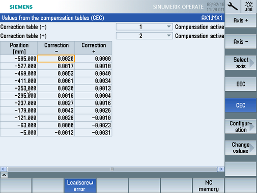
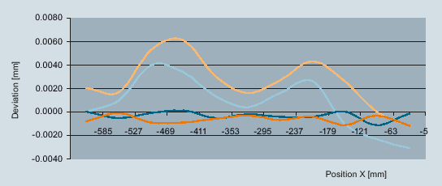

The following example shows the configuration of the direction-dependent compensation tables for machine axis AX1 with the following values.
Initial position: -585.0 mm
End position: -5.0 mm
Distance between interpolation points: 58.0 mm
For machine axis AX1, the first and second compensation tables are defined with 11 interpolation points:
Index | Position [mm] | Compensation value [mm] | |
|---|---|---|---|
negative traversing direction | positive traversing direction | ||
0 | -585 | 0.0020 | 0.0000 |
1 | -527 | 0.0017 | 0.0010 |
2 | -469 | 0.0053 | 0.0040 |
3 | -411 | 0.0061 | 0.0034 |
4 | -353 | 0.0030 | 0.0013 |
5 | -295 | 0.0016 | 0.0004 |
6 | -237 | 0.0027 | 0.0016 |
7 | -179 | 0.0043 | 0.0026 |
8 | -121 | 0.0026 | -0.0010 |
9 | -63 | 0.0000 | -0.0023 |
10 | -5 | -0.0012 | -0.0031 |
Press softkey "Activate ✓" to write the values to the NC.
Activation with reset (po) is required only once in order to create file NC_CE.ini; after this, the values can be changed without reset (po).
The measured values of the deviation before and after compensation are shown in the diagram:
Positive traversing direction:
| |
Negative traversing direction:
|
See also:
Configuring compensation tables
Preconditions for commissioning
Compensation table values